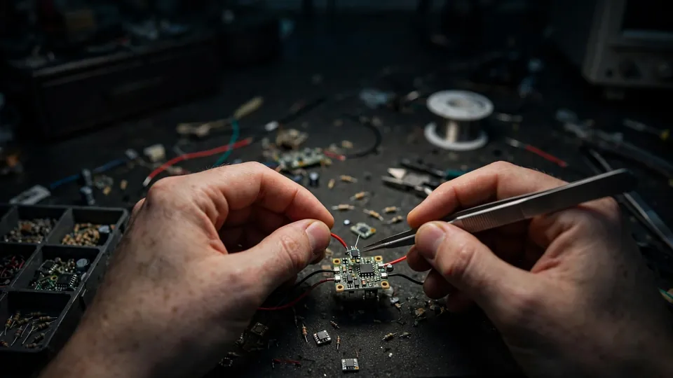
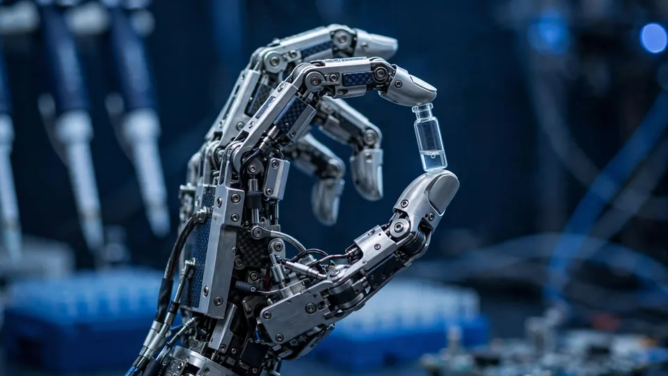

Nature Will unveils Natura-1: a 50B-parameter foundation model for robot hands, trained on a million hours of human hand use
Nature Will, a lab dedicated to physical AI, unveiled Natura-1 on Tuesday, a 50-billion-parameter foundation model for dexterous hand control and zero-shot instruction following. It is the lab’s first “physical general foundation model,” and it bets that robot dexterity comes from watching humans — a lot of them.
A foundation model for hands, not whole humanoids
Natura-1 is a 50-billion-parameter mixture-of-experts model trained jointly on language, images, video, and action, according to Nature Will's announcement. It runs at a 100-millisecond control loop, unifying language, vision, and high-degree-of-freedom action so a spoken or written instruction becomes physical manipulation.
The model is designed for general-purpose dexterous manipulation on real hardware: it autonomously executes sustained, continuous workflows and follows complex natural-language instructions, reasoning through spatial constraints, multi-object relationships, and negative conditions. Its pitch is that generalization and fine physical control can be learned together — not in separate systems.

The bet: a million hours of watching humans
Nature Will's central research wager is data, not morphology. Natura-1 was pre-trained on over one million hours of egocentric human data — first-person footage of people using their hands — so skills transfer from human hand-use to robot hands without the robot needing a whole humanoid body. That framing matters: most frontier robot labs are racing to build full-body humanoids first and worrying about the hands later. Nature Will inverts the stack and starts with the hand.
The lab is led by founder and CEO Ning Ding, an assistant professor at Tsinghua University, as noted in independent coverage of the launch. Nature Will describes its R&D stack as spanning data acquisition and governance, foundation-model pretraining, simulation and real-world evaluation, post-training, and reinforcement learning.

Why it matters
Physical AI is the industry's next land grab, and the hand is its hardest problem: manipulation is where vision-language-action models most often fail, on unfamiliar objects and long, delicate workflows. Natura-1 attacks exactly that, with zero-shot instruction following aimed at objects the model has never encountered. "We believe general models that can handle every task must exist, and that those models must utilize dexterous hands," said Ning Ding in the announcement.
The honest caveat is the one that matters: as RuntimeWire's independent analysis puts it, the value will depend on reliable transfer to unfamiliar objects and real robot hardware — parameter count alone cannot establish that. Nature Will's answer is its data moat: a million hours of human experience, scaled into purposeful action. Whether the transfer holds up outside the demo loop is what the robotics community will now be watching.
More detail is available on Nature Will's site, which hosts the lab's official Natura-1 blog.